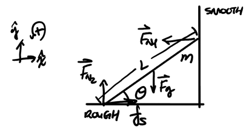

Static Equilibrium
Table of Contents
1. Static Equilibrium
A system which remains at rest in translation and rotation is said to be in static equilibrium. For such a system, two essential equations define its state:
\begin{align} \vec{F}_{\text{net}} &= 0 \\ \vec{\tau}_{\text{net}} &= 0 \end{align}Example: Ladder against a wall
Consider a ladder in static equilibrium leaning against a wall like so:

We want to determine our three unknowns here: \(F_{N1}\), \(F_{N2}\), and \(f_s\) (note that \(f_s\) is not necessarily equal to \(f_{s_{\text{max}}}\).
Using (1):
\begin{align} f_s - F_{N1} &= 0 \Rightarrow f_s = F_{N1} \notag \\ F_{N2} - mg &= 0 \Rightarrow \boxed{F_{N2} = mg} \notag \end{align}Using (2), with the pivot being the point of contact with the ground:
\begin{align} F_{N1}L\sin\theta - mg \frac{L}{2}\sin(90^{\circ} - \theta) &= 0 \notag \\ 2F_{N1}\sin\theta - mg\cos\theta &= 0 \notag \\ 2F_{N1}\sin\theta &= mg\cos\theta \notag \end{align}Thus, we have:
\begin{align} \boxed{F_{N1} = f_s = \frac{mg\text{ cot }\theta}{2}} \notag \end{align}